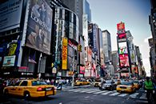

Mon séjour d'hiver à New York
Mon séjour d'hiver à New York
 Bonjour tout le monde !!
Vous vous demandez sûrement ce que j'ai bien pu faire à New York par ce froid glacial qui règne en décembre. Eh bien tout simplement,
je rendais visite à de la famille qui y vit et que je n'avais jamais eu l'occasion de rencontrer depuis 23 ans !! (en gros, depuis que je suis né...).
Et comme j'aime beaucoup rencontre des gens, c'est un plus pour moi, youpiii !!!
Pourquoi en hiver ? Parce que j'adore la neige et tout et tout et encore plus les périodes de fêtes; en l'occurrence, Noël et Nouvel An.
En effet, rien de mieux que de passer Noël en famille : on s'amuse, on se prend la tête, on se donne quelques coups et après quelques verres,
on s'amuse de nouveau. C'est pas génial ça :). Enfin, trêve de plaisanterie, on a vraiment passé un bon réveillon et un super Noël : bon repas, bonne
entente et bon dodo. Et puis, je dois dire que voir la famille une fois tous les 20 ans, ça fait plaisir. Je garderai bien contact avec eux maintenant que je sais qu'ils existent.
Pour le reste du séjour, on a visité pas mal de monument et d'endroits célèbres (la base du tourisme quoi!) : RockFeller Center, Madame Tussaut, le musée d'histoire naturelle (d'ailleurs
tellement grand que je m'y suis perdu à plusieurs reprises avec mes cousines, on a pas vraiment le sens de l'orientation dans la famille faut croire),
l'empire State building etc...J'ai même eu l'occasion de passer un super nouvel dehors dans la rue à attendre que la petite boule monte jusqu'en haut. C'était une bonne soirée où il faisait
pas plus de -5°C mais on se frotter les uns contre les autres comme des pingouins pour se réchauffer. vu le monde qu'il y avait, c'était pas trop gênant.
Bon, je vous raconterai bien en détails ce merveilleux voyage de 2 semaines mais je manque un peu de temps. Du coup, la suite dans un prochain article ^^.
Merci pour ceux qui ont pris le temps de lire et bonne journée !!! (ou bonne soirée ou bonne nuit selon l'horaire que vous avez)